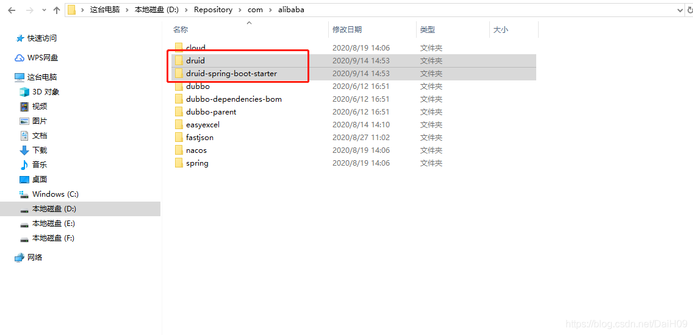
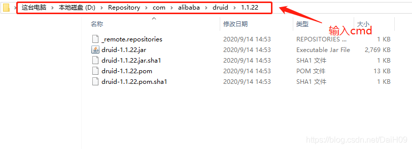
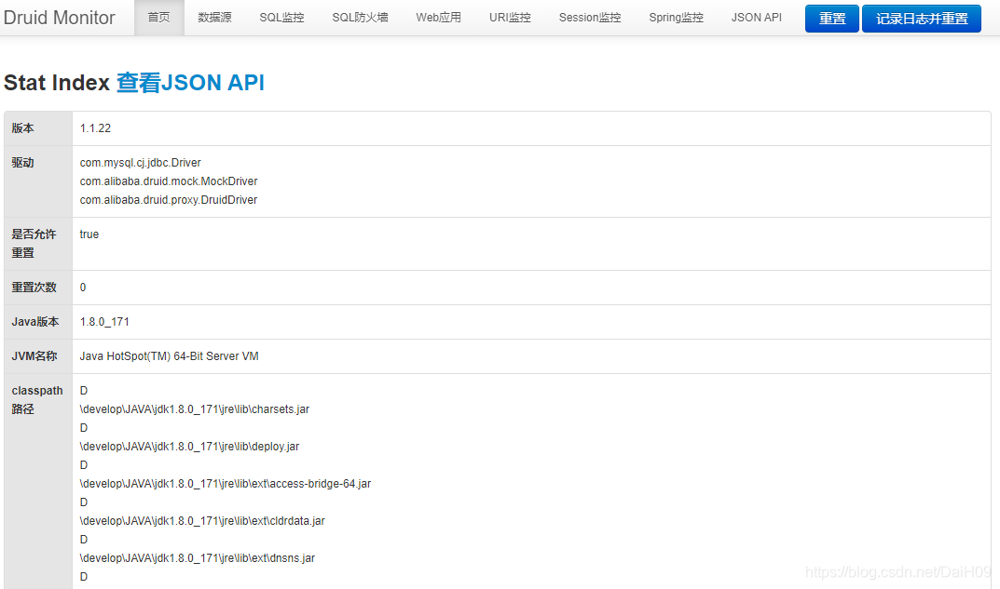

Springboot+Druid实现数据库密码加密_DaiH09的博客-CSDN博客_files/csdnqr@2x.png) CSDN
CSDN Springboot+Druid实现数据库密码加密_DaiH09的博客-CSDN博客_files/eduwxfix.png) CSDN学院
CSDN学院 Springboot+Druid实现数据库密码加密_DaiH09的博客-CSDN博客_files/csdn-sou.png)
Springboot+Druid实现数据库密码加密_DaiH09的博客-CSDN博客_files/original.png)
Springboot+Druid实现数据库密码加密_DaiH09的博客-CSDN博客_files/articleReadEyes.png)
Springboot+Druid实现数据库密码加密_DaiH09的博客-CSDN博客_files/tobarCollect.png)
Springboot+Druid实现数据库密码加密_DaiH09的博客-CSDN博客_files/tobarCollectionActive.png)
1、在 Spring Boot 项目中加入druid-spring-boot-starter依赖
<dependency>
<groupId>com.alibaba</groupId>
<artifactId>druid-spring-boot-starter</artifactId>
<version>1.1.22</version>
</dependency>
- 1
- 2
- 3
- 4
- 5
2、druid.jar包对密码加密处理
在项目中引入上面maven依赖后会自动在本地maven仓库中下载对应的jar包

进入druid目录，选择对应版本并进入，在文件路径框输入cmd。

在出现的命令窗口执行如下命令：
java -cp druid-1.1.22.jar com.alibaba.druid.filter.config.ConfigTools 1234
- 1
其中：1234为本次测试数据库密码，使用时换成你们自己数据库密码即可。
执行完会得到如下数据：
privateKey:MIIBVQIBADANBgkqhkiG9w0BAQEFAASCAT8wggE7AgEAAkEArXl1iBA/xpAnuisut82uSQpdJfcp0wKp6D0D3fEXtV68p23k//VpVzYLkx1enaNNumUlPFt9q3hLzyCSyBvGMQIDAQABAkBTrbwZByWMZasULZJajTed+gbWsnQVWjqVUSFVZN+315Cx2zZgZcs/mrYSORlFIo0qs7nd7qopQlDjM3E2NI6VAiEA18CU5frRbB2EjezLI5xbuMA+/Ufx9YQxs7ohRtAcdJcCIQDN1d31VHuWXspQSRzUJrfCm2E51GOBmD8FdOX+1rmMdwIhAIIlNGyKYTvTjntCZMOFdTq8FQMaHBWa+ZRN6fbaYN/fAiAlnEmFVV2LuWBQUTuyTCzRo2Cdl4BjIrWJQrXv3b5juwIhALRRWd+KpqeCoNocT+QYizhDQU/Q5kTJTEeSiacfDz2G
publicKey:MFwwDQYJKoZIhvcNAQEBBQADSwAwSAJBAK15dYgQP8aQJ7orLrfNrkkKXSX3KdMCqeg9A93xF7VevKdt5P/1aVc2C5MdXp2jTbplJTxbfat4S88gksgbxjECAwEAAQ==
password:YwiaTA59Hh6LGm8ISEKdQazf8nCFFm7dhUd2h5ehTWeD5fWa5yQSwcqFNb4kiVqtRrnBtxJpXyNW/L03OM9lrg==
- 1
- 2
- 3
publicKey和password会在后面配置中用到
3、springboot添加配置
在application.yml中添加如下配置：
spring:
# 数据库连接
datasource:
url: jdbc:mysql://192.168.8.65:3306/test
username: root
# ==========driud实现数据库密码加密=========
# 生成的加密后的密码（原密码 1234）
password: YwiaTA59Hh6LGm8ISEKdQazf8nCFFm7dhUd2h5ehTWeD5fWa5yQSwcqFNb4kiVqtRrnBtxJpXyNW/L03OM9lrg==
druid:
# 启用监控页面
stat-view-servlet:
enabled: true
# 启用ConfigFilter
filter:
config:
enabled: true
# 配置 connection-properties，启用加密，配置公钥。
connection-properties: config.decrypt=true;config.decrypt.key=${public-key}
# druid生成的公钥
public-key: MFwwDQYJKoZIhvcNAQEBBQADSwAwSAJBAK15dYgQP8aQJ7orLrfNrkkKXSX3KdMCqeg9A93xF7VevKdt5P/1aVc2C5MdXp2jTbplJTxbfat4S88gksgbxjECAwEAAQ==
- 1
- 2
- 3
- 4
- 5
- 6
- 7
- 8
- 9
- 10
- 11
- 12
- 13
- 14
- 15
- 16
- 17
- 18
- 19
- 20
- 21
4、启动项目
访问:localhost:8080/druid,看到如下页面则配置成功

Springboot+Druid实现数据库密码加密_DaiH09的博客-CSDN博客_files/tobarThumbUp.png)
Springboot+Druid实现数据库密码加密_DaiH09的博客-CSDN博客_files/tobarComment.png)
Springboot+Druid实现数据库密码加密_DaiH09的博客-CSDN博客_files/tobarShare.png)
![]()
Springboot+Druid实现数据库密码加密_DaiH09的博客-CSDN博客_files/tobarMobile.png)
![]()
Springboot+Druid实现数据库密码加密_DaiH09的博客-CSDN博客_files/tobarReward.png)
Springboot+Druid实现数据库密码加密_DaiH09的博客-CSDN博客_files/lookMore.png)
Springboot+Druid实现数据库密码加密_DaiH09的博客-CSDN博客_files/readCountWhite.png) 126
126
Springboot+Druid实现数据库密码加密_DaiH09的博客-CSDN博客_files/gongan.png)
Springboot+Druid实现数据库密码加密_DaiH09的博客-CSDN博客_files/guide.png)
Springboot+Druid实现数据库密码加密_DaiH09的博客-CSDN博客_files/kefu.png)
Springboot+Druid实现数据库密码加密_DaiH09的博客-CSDN博客_files/fanhuidingbucopy.png)